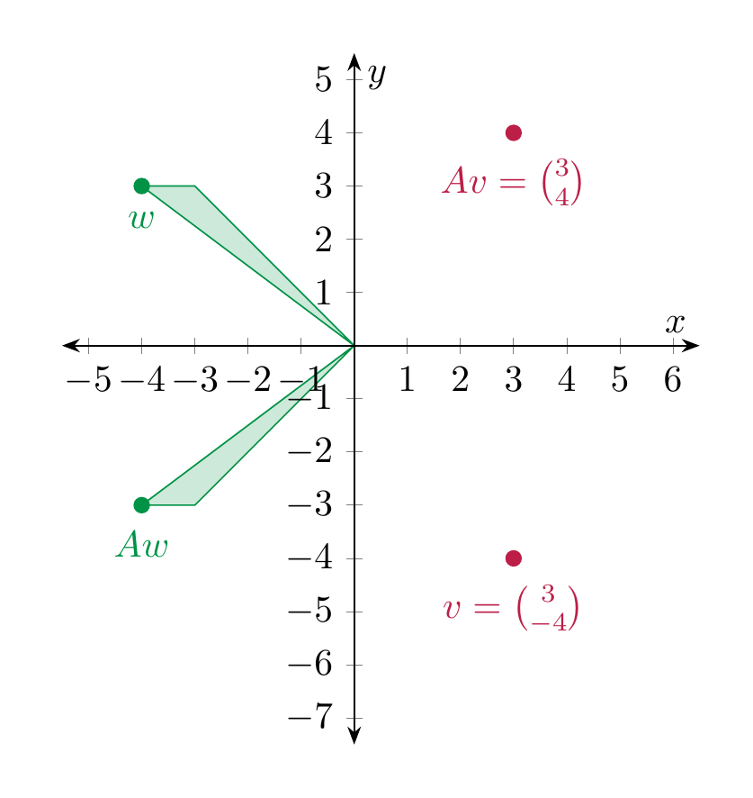
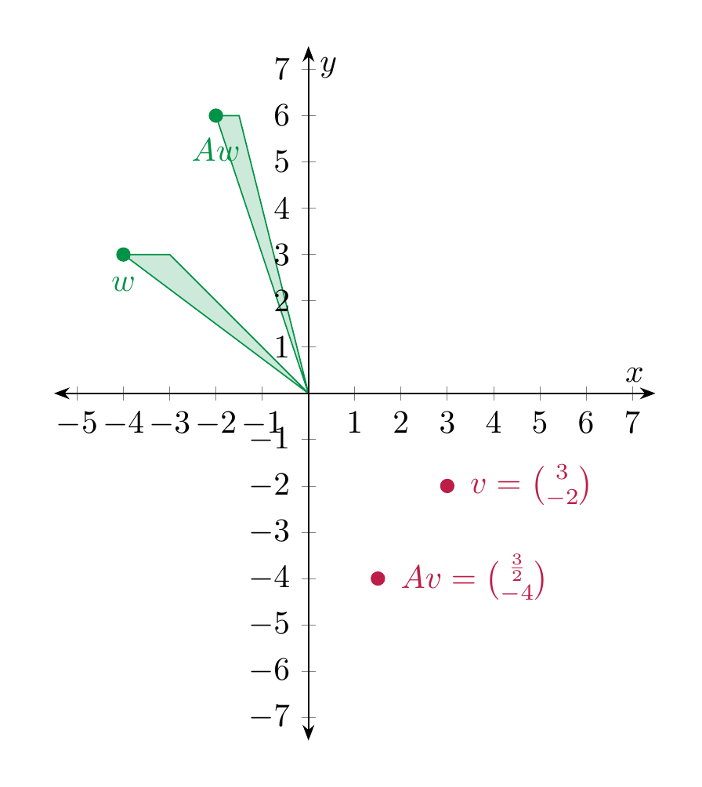
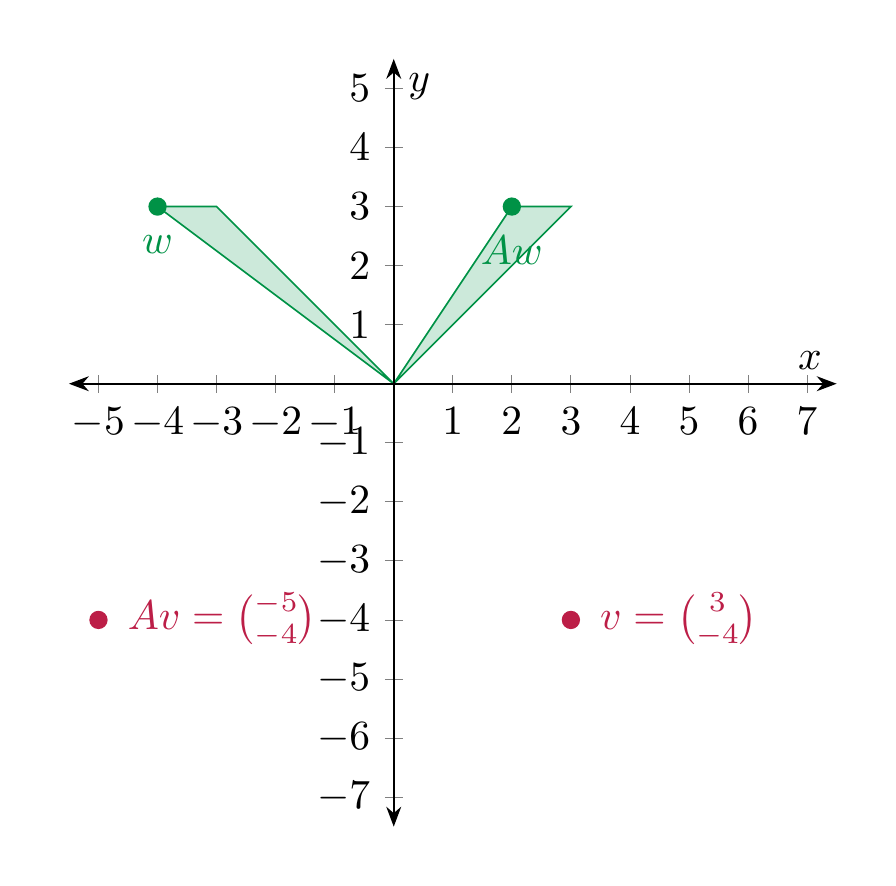
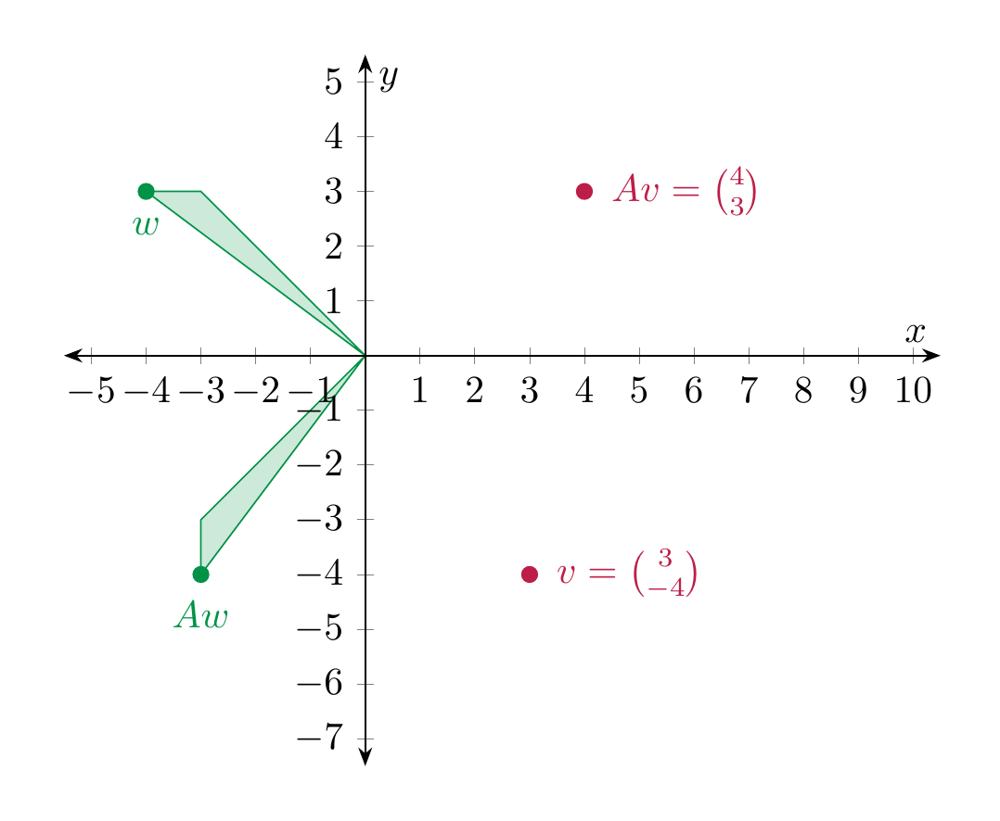

Multiplication of a matrix with a vector¶
In this section, we define the multiplication of a matrix with a vector and show how this gives rise to a linear map. This is an extremely important way to construct linear maps.
Definition 4.9 (Related exercises: Exercise 4.1, Exercise 4.2)
Let \(A = (a_{ij})_{1 \le i \le m, 1 \le j \le n}\) (cf. Notation 2.22) be an \(m \times n\)-matrix and \(v = \left ( \begin{array}{c} v_1 \\ \vdots \\ v_n \end{array} \right )\) be a \(n \times 1\)-matrix, i.e., a row vector with \(n\) columns. The product of \(A\) with \(v\) is the \(m \times 1\)-vector
Thus, the \(i\)-th entry of the (column) vector \(Av\) is computed by traversing the \(i\)-th row of \(A\) and multiplying each entry of that row with the corresponding entry of \(v\).
Example 4.10
Here are two concrete examples:
It makes perfectly good sense to consider matrices whose entries are variables. Compute:
Thus, the equation (of column vectors consisting of 3 rows)
is a very convenient way to write down the linear system
This shows that the product of matrices with column vectors is very useful in enconding linear systems. We record this observation in the due generality:
Observation 4.11
Let
be an \(m \times n\)-matrix and
be a column vector with \(n\) rows and
be a column vector with \(m\) rows. Then the equation
is equivalent to the linear system (in the unknowns \(x_1, \dots, x_n\), consisting of \(m\) equations)
The case of \(2 \times 2\)-matrices¶
The process of multiplying a matrix with a column vector is also geometrically very important. We now investigate this in more detail in the case where
For a column vector \(v = \left ( \begin{array}{c} v_1 \\ v_2 \end{array} \right )\) the product is, according to Definition 4.9,
(4.12)
In keeping with traditional notation from geometry, we will instead write the vector \(v\) as \(\left ( \begin{array}{c} x \\ y \end{array} \right )\), in which case
It is useful to organize this situation into a function, namely the function that sends the vector \(v\) to the vector \(Av\). We obtain a function
Of course, since \(Av\) depends on the entries of \(A\), so does this function \(f\).
Reflections¶
Example 4.13
We consider \(A = \left ( \begin{array}{cc} 1 & 0 \\ 0 & -1 \end{array} \right )\). According to the above we have
We plot a few points \(v\) and the corresponding \(Av\):

Thus, geometrically, \(Av\) is the point \(v\) reflected along the \(x\)-axis.
Rescalings¶
Example 4.14
The matrix \(A = \left ( \begin{array}{cc} \frac 12 & 0 \\ 0 & 1 \end{array} \right )\) describes the map that compresses everything in the \(x\)-direction by the factor \(\frac 12\), and leaves the \(y\)-direction untouched.
Example 4.15
If \(r\), \(s\) are two real numbers,
rescales the \(x\)-direction by a factor \(r\) (so it shrinks for \(r < 1\) and enlarges for \(r > 1\)) and rescales the \(y\)-direction by a factor \(s\).
For \(A = \left ( \begin{array}{cc} \frac 12 & 0 \\ 0 & 2 \end{array} \right )\), this looks as follows:

Shearing¶
Example 4.16
For a fixed real number \(r\), the matrix
sends \(v\) to \(Av = \left ( \begin{array}{c} x+ry \\ y \end{array} \right )\). Thus it is a shearing operation. In the following picture \(A = \left ( \begin{array}{cc} 1 & 2 \\ 0 & 1 \end{array} \right )\).

Rotations¶
We now consider rotations.
Example 4.17 (Related exercises: Exercise 4.1, Exercise 4.2)
For \(A = \left ( \begin{array}{cc} 0 & -1 \\ 1 & 0 \end{array} \right )\), the vector \(Av = \left ( \begin{array}{c} -y \\ x \end{array} \right )\). Geometrically, the function \(v \mapsto Av\) is a counterclockwise rotation by \(90^\circ\).
For \(A = \left ( \begin{array}{cc} -1 & 0 \\ 0 & 1 \end{array} \right )\), the vector \(Av = \left ( \begin{array}{c} -x \\ y \end{array} \right )\) so the function \(v \mapsto Av\) describes a counterclockwise rotation by \(180^\circ\) (or, what is the same, a clockwise rotation by \(180^\circ\)).
For more general rotations, we use basic properties of the trignometric functions, e.g., as recalled in §Chapter B.
Example 4.18 (Related exercises: Exercise 4.1)
In general, for any \(r \in {\bf R}\) the matrix
is such that the function
is a (counter-clockwise) rotation by \(r\). For this reason, \(A\) is called a rotation matrix.
In the following illustration, \(A = \left ( \begin{array}{cc} 0 & -1 \\ 1 & 0 \end{array} \right )\).

We regard a vector \(v = \left ( \begin{array}{c} v_1 \\ \vdots \\ v_n \end{array} \right )\) as an element of \({\bf R}^n\). (Thus, instead of using the notation \((v_1, \dots, v_n)\) for an ordered tuple, as in Definition 3.1, we write the \(n\) numbers underneath in a row.) Fix an \(m \times n\)-matrix \(A\). Then the product \(Av\), which is an column vector with \(m\) entries, is an element in \({\bf R}^m\). We now regard this matrix \(A\) as fixed, and consider the vector \(v\) as a variable. In other words, we consider the function (or map)
Matrix multiplication has the following basic, but crucial property.
Proposition 4.19 (Related exercises: Exercise 4.17, Exercise 4.5, Exercise 4.21, Exercise 4.22)
For any \(m \times n\)-matrix \(A\), the above map is linear.
Proof. We prove this in the case \(m = n = 2\) using . (The case of general \(m\) and \(n\) is just notationally more involved, but otherwise the same.) Let \(v = \left ( \begin{array}{c} v_1 \\ v_2 \end{array} \right )\), \(v' = \left ( \begin{array}{c} v'_1 \\ v'_2 \end{array} \right )\). Then
Likewise, one checks Equation (4.3), i.e., that for \(a \in R\),
◻